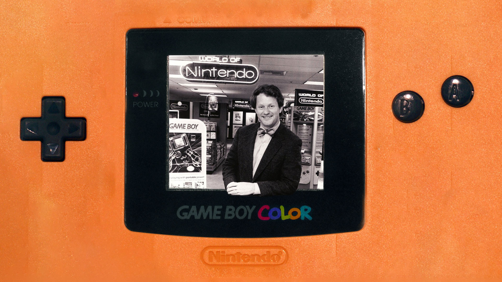
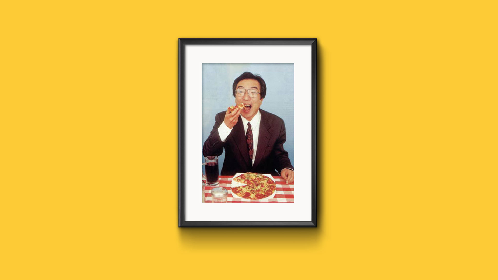

Anos 90: Os Primeiros Passos do Jornalismo de Games no Brasil
Um cartucho. Uma moeda. Um controle. Uma revista. Todos esses objetos foram parte fundamental para milhares de crianças no mundo todo. A revolução dos games nas últimas décadas levaram milhares de jovens para mundos e experiências nunca antes vistas.Os videogames eram não só uma forma de entretenimento, mas para muitos, um estilo de vida. Passar horas e horas na frente da televisão enfrentando monstros, salvando princesas e encontrando artefatos milenares. Essa geração que cresceu com os games também fez parte de outra revolução: o jornalismo de games.
Surgindo inicialmente nos Estados Unidos no início dos anos 80, mais especificamente em 1981 na edição da revista Computer & Video Games de Novembro de 1981, as publicações se iniciaram por um desejo do público de saber os melhores games de arcades do momento e os segredos e dicas de seus jogos. Havia pouquíssimo do que se pode chamar de Jornalismo com “J” maiúsculo, e foi assim por muitos anos.

E no Brasil, quando se iniciou as publicações no país? A primeira publicação que se tem notícia voltada para o assunto é datada de 1983, poucos anos depois da primeira lá fora. Na revista Odyssey Adventure, especializada em jogos do console Odyssey e que era distribuída para um clube de proprietários do videogame. Por não ter uma distribuição grande e focar em um público muito pequeno na época, a edição sobreviveu por pouco tempo e acabou saindo de linha no seu oitavo volume, em Junho de 1985. Mas isso seria apenas um início tímido e que não levaria a muita coisa. Com a indústria em momentos de recessão após a falência comercial da Atari em 1983, a indústria fora dos maiores polos econômicos também não teria muita chance de crescer, precisando esperar alguns anos até a sua retomada.

Foi em Dezembro de 1990, pouco menos de 10 anos após a primeira publicação de games lá fora, o que já denotava a natureza retrograda da indústria no país, que veio a sair a primeira publicação para o grande público: a Ação Games. Lançada como edição especial da revista A Semana em Ação da Editora Abril, a publicação que iniciou pouco menos na virada do ano, em Dezembro de 1990. A edição principal não durou, mas foi o pontapé para que a Editora Azul comprar seus direito e publicá-la a partir de Abril do ano seguinte, pavimentando um caminho para outras revistas irem atrás.

Nesse momento algumas revistas se destacaram: a Ação Games (1991), encarregada pelo editor chefe Paulo Montoia; a SuperGame (1991), que depois viria a se chamar GamePower (1992) e em seguida SuperGamePower (1994), encabeçada pelo editor Mathew Shirts; a Gamers (1995), que anteriormente se chamava ProGames (1992), de Ivan Battesini; e a VideoGame (1991) de Roberto Araújo. As quatro revistas, em questão de anos (ou até meses em alguns casos) nasceram com um único propósito: Preencher as mentes e corações dos gamers brasileiros ao criar as primeiras edições que falavam para o público como grandes amigos.
O Sonho de Qualquer Moleque
O público-alvo sempre foi o coração das publicações. Eram eles que ditavam sobre o que a revista iria falar na edição do mês, as dicas que todo mundo esperava e as novidades lá fora que desejariam saber. E especialmente nessa época, e que foi um dos grandes fatores para que ela seja tão lembrada até hoje, foi o fato de ser produzida pelo jogador para o jogador. “As primeiras revistas de games eram feitas pelos próprios jogadores” diz Fabio Santana.
Uma situação completamente incomum é que, apesar de ser uma revista produzida, diagramada e editada por profissionais, boa parte das publicações envolviam jogadores que nem ao menos tinham saído do colégio para escrever e jogar. Os chamados pilotos, formados na maioria das vezes por garotos e adolescentes, que passavam suas tardes nas locadoras. Eram sondados por editores das revistas que eram pagos para jogar e encontrar dicas e truques de cada jogo. Foi ali que Fabio Santana começou sua carreira no ramo, com apenas 16 anos, ele foi chamado por Bruno para ser um piloto da Gamers;
Por ter um pai dono de locadora de videocassete, Fabio ficou responsável pela parte de games da locadora. Procurando em revistas especializadas internacionais e em outras locadoras, como a ProGames, Fabio acabou conhecendo Ivan Battesini, sócio da locadora, que por sua vez adorava conversar com Fabio sobre games e sua opinião de como melhorar o conteúdo da revista que Ivan estava desenvolvendo, a Gamers.

Começando na área ainda na adolescência, Fabio se mostrava bom não só no controle, mas em escrever para a revista. Desde então, Fabio se tornou um dos principais redatores da revista, sendo além de um piloto e escrevendo na revista de fato, por ser um dos únicos ali que entendiam do assunto. “Esse foi meu início, tendo essa grande responsabilidade de uma hora para a outra, o sonho de qualquer moleque na época e também o meu”.
Um dos desafios que a época pré-internet propiciava para os profissionais da área era a forma de captura de tela dos jogos, por exemplo. Sem uma placa de captura ou uma mídia digital para gravar os gameplays, os editores tinham que criar formas para burlar essa limitação, gravando diretamente da TV ou até tirando fotos da tela pausada do jogo.
Havia um caráter de amadorismo, mesmo sendo capitaneada por editores-chefes experientes no mercado impresso, a maioria do conteúdo era feito por quem jogava os games, por quem fazia o “trabalho sujo” de jogar para encontrar segredos e dicas úteis para a publicação. E não foi só Fabio, mas outros pilotos encontrariam nesse mercado seu desejo de seguir carreira.
A ideia de uma ligação forte com o leitor data de uma época bem antes das primeiras publicações da Game Power. Em 1988, com a Nintendo Power, criou-se ali uma necessidade de se ligar com o público de forma fácil e carismática, e foi com a tirinha Howard e Nester que isso foi feito de início. Adaptando a figura de Howard Philips, Game Master da empresa e um quase mascote para ela, era conhecido por jogar e testar todos os lançamentos, sendo até reconhecido pelo grande público. Foi ali que se iniciou uma tendência no mercado: Atrair o publico com alguém em que ele se simpatizasse e se identificasse. Que ficasse com raiva de não passar da fase na água do Mario, que soubesse da passagem secreta no arbusto do primeiro Zelda.

A paixão de Fabio o levaria anos depois a ingressar na Conrad, na época já um adulto, para trabalhar em revistas como a Pokémon Club e Nintendo World. Foi ali que conheceu Pablo Miyazawa, outro grande nome do jornalismo de games. Mas isso fica para a próxima parte.
A paixão aqui é o grande diferencial, não havia dinheiro ou fama que faziam desses jogadores menores de idade escrever para as revistas, era a pura vontade de falar sobre o assunto. Em um período pré-internet, jogadores brasileiros não encontravam uma comunidade para debater sobre os jogos. As experiências, muito antes do modo online se popularizar nos consoles, eram feita de forma solitária. Eram as revistas, com seus escritores transformados em personagens caricatos e seu estilo de escrever bem coloquial e extrovertido. Era nas sessões de cartas em que havia a grande Meca, o lugar em que pelo menos uma vez por mês, os leitores se encontravam e se perdiam nas páginas da revista. Em uma época onde os próprios games não facilitavam a vida dos jogadores, com dificuldade elevada e passwords para avançar. O único jeito de passar de certas fases era ter em mãos a desejada revista com dicas e detonados de jogos.
Cleber Marques foi um dos garotos tocados por essas publicações. Contando moedas de merendas e tendo que escolher bem qual revista escolher (a GamePower era uma de suas favoritas), foi de pouco em pouco começando uma coleção de publicações que iria beirar a 3000 edições. “A edição número 12, na capa do Street Fighter 2, foi a minha primeira revista que comprei com o meu dinheiro. A partir dali não parei mais, coleciono até hoje” diz Cleber, ainda claramente empolgado de lembrar do seu passado. “Antes era mais difícil encontrar material a respeito de games e ter acesso a informação, mas confesso que era mais divertido”.
Pessoas como evil_arthas, 41 anos, dentista que mora em Salvador na Bahia, tiveram seus primeiros contatos na mesma época. Desde a primeira edição, evil_arthas se sentiu maravilhado pelas publicações e decidiu se tornar colecionador. “Comprei revistas sobre jogos que eu nunca joguei”, diz.
Foi em uma época onde eram as publicações que definiam o que o público iria se interessar, “O lançamento da Gamers Book n°1, sobre Final Fantasy VII, foi um marco. As pessoas não só falavam sobre o jogo, mas comentavam também sobre a revista”, diz evil_arthas.

De Jogador Para Jogador
Nessa época se destacavam algumas características editoriais que se tornaram marcas daquele período. Uma delas era em que todas as revistas, o foco era em um estilo de escrita e diagramação simples e colorido, focando em textos simples e de fácil compreensão para o público infanto-juvenil que acompanhava as publicações. Enquanto os games engatinhavam nos seus primeiros passos da violência, com a estreia de Mortal Kombat nos arcades e consoles da Nintendo e SEGA. As revistas esbanjavam o sangue e o grotesco para chamar atenção das crianças. A partir de certo tempo, as publicações também iniciaram a produção de Guias; publicações que tinham o foco em determinado jogo ou gênero para dar dicas e detonados. Oferecendo conteúdos segmentados para atrair públicos que desejavam informações específicas.

As artes de muitas edições eram feitas nas editoras por artistas próprios. Isso acabou se tornando uma das grandes marcas daquele período, que por não existir apoio oficial das empresas licenciadas, produziam material a partir do que podiam, com arte própria e reprodução de capas e pôsteres de jogos para se encaixarem no layout das capas e páginas. A diagramação das revistas eram feitas a partir de diagramas produzidos em cartolinas onde os editores colavam as imagens e sobrepunham os fotogramas dos jogos.
E um dos grandes fatores que diferenciam a praxi profissional especializada na área daqui para outros países era o grande atraso que as novidades chegavam para os profissionais em comparação aos países lá fora. Como estamos falando de uma indústria que sempre foi baseada na bipolaridade de grandes mercados: o norte-americano e o japonês, que além de serem os principais produtores de jogos eram os de maior concentração de informações e contatos. Um país como o Brasil, recém-saído de uma ditadura militar, com graves problemas sociais e econômicos, não era o melhor lugar para se encontrar a cobertura mais rápida e profunda de games.
As publicações especializadas no exterior sempre tiveram um papel fundamental para as publicações nacionais. Como veremos mais à frente, as maiores revistas especializadas no assunto (e que recebiam material licenciado por justamente se localizarem no mesmo país que as empresas fabricantes) eram a grande referência para as publicações aqui, com duas sendo o maior destaque em todo o período: a Nintendo Power e a Eletronic Gaming Monthly, mais conhecida como EGM. “A Ação Games licenciou conteúdo da EGM, algumas entrevistas ou matérias especiais. Eu lembro que até tinham uma série que eles faziam com os criadores de videogames. E tinha uma com o Tohru Iwatami, criador do Pac-Man, com uma foto de uma pizza sem uma fatia, no formato do mascote. Eles licenciaram essa matéria para publicar na Ação Games aqui.”, diz Fabio.

Mas não eram todos os jogos de sucesso lá fora que eram sucesso com a garotada aqui no Brasil. E isso acabava interferindo na produção jornalística, já que os profissionais necessitavam estar atentos às necessidades do público através do puro e simples boca-boca. Além disso, os editores das revistas especializadas para conseguirem contato com as grandes novidades precisavam estar sempre em contato com locadoras e lojas especializadas, como havia poucas empresas fabricante de games oficialmente instaladas no país, a necessidade era de encontrar fornecedores que tivessem o jogo mais rápido que a outra publicação. Era uma corrida lenta, mas ainda sim uma corrida para disputar a atenção do público, a edição que dissecava o jogo do mês dispararia nas vendas.
Outro que começou seus passos nas grandes revistas da época foi Humberto Martinez. Começando a trabalhar na Ação Games. Ao ler a Gamers que Fabio Santana escrevia, Humberto teve a realização de que poderia ganhar a vida trabalhando com algo que a princípio era apenas seu passatempo nos tempos de almoxarife júnior.
Pode ter sido azar ou sorte, mas seus primeiros dias nas publicações foram na verdade os últimos daquela revista. “Eles chegaram falando “Então, a revista faliu, vai deixar de existir”. Só que a produção da edição do mês estava no começo, eu já tinha começado o trabalho, agora eu vou até o fim dela”. Apesar dessa persistência, Humberto inevitavelmente saiu da Abril e logo depois foi contratado pela Editora Europa depois de alguns meses fazendo freelancer para a revista Playstation.
Isso faria levá-lo para uma nova dimensão, uma nova era do jornalismo de games, e que ao contrário do último emprego, seria muito mais longeva: A Editora Europa.
O Outro Ponto de Vista
Em termos de vendas, tais publicações eram enormes na época, chegando a vender mais de 120.000 exemplares, números que rivalizavam com grandes publicações da época. Foi nesse cenário prolífico que os grandes jornalistas no mercado começariam a dar seus primeiros passos. Ricardo Farah, por ter um pai aficionado por tecnologia, sempre cresceu com videogames “Eu lembro claramente da gente jogar o Master System, o Nintendinho, o Mega Drive. Por causa dele eu tinha pilhas e pilhas da VideoGame, SuperGamePower, Gamers, etc espalhadas em casa, era muito legal.”. Foi assim que começaria uma jornada para o garoto do centro de São Paulo que o levaria para uma jornada no jornalismo de games e trabalhar em revistas que marcariam a próxima fase, nos anos 2000.
Apesar de atualmente serem consideradas revistas de colecionadores e artigos de luxo, houve o momento de declínio dessas publicações por justamente pararem de atender uma geração voraz que criava novos gostos. Com a queda de vendas da Ação Games e da SuperGame, o declínio era eminente. Mas sem antes outra editora surgir do horizonte.

Por muitos, a primeira época do jornalismo de games foi a mais especial, por exatamente trazer esse suposto amadorismo e criar publicações que ressoavam com o público, já que muitas vezes eram feitas por pessoas desse público. Talvez o que vivemos atualmente com a onda dos youtubers possa ser um pouco desse sentimento redescoberto em outra mídia. Mídia essa que a partir da segunda geração, mudaria os conceitos de publicação aqui no Brasil e lá fora. “O ponto de vista nos anos 90 era do jogador, enquanto nos EUA já tinha um ponto de vista de um jornalista que cobria isso como uma indústria, como um negócio, e vários aspectos partindo da premissa que alguém estava criando os jogos”. “A gente meio que importou essa percepção e quando começou a vir esse conteúdo licenciado pra cá, e eu acho que isso acabou elevando o patamar das publicações aqui no Brasil”
Após algumas tentativas de continuar no mercado, a Ação Games finalmente fechou as portas em janeiro de 2002. A SuperGamePower também sofria em manter sua publicação, tendo uma periodicidade inconstante depois de seu término na editora Nova Cultural. Após ser revitalizada pela editora Option, que a encerrou após uma época conturbada na edição, em dezembro de 2006.

“A revista tinha que crescer porque o público que lia nos anos 90 também tinha crescido”, diz Cleber, que diz que tal justificativa foi dada pela maioria dos editores que trabalharam nas revistas de sucesso dos anos 2000.
As revistas teriam que evoluir para o novo milênio. Com um público mais velho e com novos poderosos videogames no mercado, além de novas empresas como a Microsoft com seu Xbox, e o fim da produção de hardware de uma das grandes empresas até aquele momento, a SEGA. O mundo mudava, e as revistas tinham que mudar para não receberem um Game Over das editoras. Mas como algo que era quase uma brincadeira se tornou tão sério e importante em apenas alguns anos? Isso é o que iremos descobrir na próxima parte.